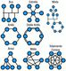

Anexo.- Licencias de recursos.
| Recurso | Datos del recurso | Recurso | Datos del recurso |
|---|---|---|---|
|
Autoría: warszawianka Licencia: CC0 Creative Commons Procedencia: http://www.openclipart.org/detail/35389/tango-applications-internet-by-warszawianka |
Autoría: DBGthekafu Licencia: GPL Procedencia: http://wikimediafoundation.org/wiki/File:Network-wired.png |
||
|
Autoría: Shirley Ku Licencia: Creative Commons Attribution-Share Alike 3.0 Unported Procedencia: http://meta.wikimedia.org/wiki/File:FPL%27s_Computer_lab.jpg |
Autoría: Davide Capasso / daccap Licencia: CC0 Creative Commons Procedencia: http://www.openclipart.org/detail/131179/internet-scheme-by-daccap |
||
|  |
Autoría: Jmorchio Licencia: Creative Commons Attribution-Share Alike 3.0 Unported Procedencia: http://meta.wikimedia.org/wiki/File:Topologia_de_Red.PNG |
Autoría: Ggia (talk) Licencia: Creative Commons Genérica de Atribución/Compartir-Igual 3.0 Procedencia: Montaje sobre http://commons.wikimedia.org/wiki/File:LAN_WAN_scheme.svg |
|
|
Autoría: Stockbyte. Licencia: Uso educativo no comercial para plataformas públicas de Formación Profesional a distancia. Procedencia: CD-DVD Num. V43 |
Autoría: Photodisc. Licencia: Uso educativo no comercial para plataformas públicas de Formación Profesional a distancia. Procedencia: CD-DVD Num. V07 |
||
|
Autoría: Bruceadler Licencia: Creative Commons, dominio público Procedencia: http://commons.wikimedia.org/wiki/File:Ethernet_Type_II_Frame_format.svg |
![Cuatro bloques que representan la evolución hasta llegar a los protocolos IP desde las definiciones iniciales, hasta la última, la versión 6. El diagrama muestra el crecimiento masivo del espacio de direcciones de cada protocolo. El primer bloque empezando por la derecha representa IMP, inicio de las comunicaciones de Internet. El segundo bloque representa el RFC 675, documento que define TCP originalmente, el tercer bloque muestra IPv4 con el numero de direcciones que puede dar: 2 elevado a 32. El último bloque representa IPv6 con el número de direcciones posibles que es 2 elevado a 128.](./SI03_CONT_R15_CascadaIP-es_anexo.jpg "Protocolos IP") |
Autoría: Verona ULE Licencia: Creative Commons Attribution-Share Alike Procedencia: http://commons.wikimedia.org/wiki/File:CascadaIP-es.PNG |
|
|
Autoría: gnokii Licencia: Creative Commons dominio público Procedencia: http://www.openclipart.org/detail/129403/hand-truck-by-gnokii |
Autoría: ufo_web_factory Licencia: Creative Commons dominio público Procedencia: http://www.openclipart.org/detail/16603/world-wide-web-by-ufo_web_factory |
||
|
Autoría: Lmbuga Licencia: Domino público Procedencia: http://meta.wikimedia.org/wiki/File:Topolox%C3%ADa_en_bus.png |
Autoría: Lmbuga Licencia: Domino público Procedencia: http://meta.wikimedia.org/wiki/File:Topolox%C3%ADa_en_anel.png |
||
|
Autoría: Lmbuga Licencia: Domino público Procedencia: http://meta.wikimedia.org/wiki/File:Topolox%C3%ADa_en_estrela.png |
Autoría: Lmbuga Licencia: Domino público Procedencia: http://meta.wikimedia.org/wiki/File:Topolox%C3%ADa_en_%C3%A1rbore.png |
||
|
Autoría: Baran Ivo Licencia: Dominio público Procedencia: http://es.wikipedia.org/wiki/Archivo:FTP_cable3.jpg |
Autoría: RONALD Licencia: Creative commons, atribución, igualmente compartido. Procedencia: Montaje sobre http://commons.wikimedia.org/wiki/File:CABLE_IX.jpg |
||
|
Autoría: Ronald Licencia: Creative commons, atribución, igualmente compartido. Procedencia: http://commons.wikimedia.org/wiki/File:FIBRA_OPTICA_DEFRACCION.jpg |
Autoría: Trooper 666 123 Licencia: Creative Commons, atribución Procedencia: http://commons.wikimedia.org/wiki/File:Telecomroom.jpg |
||
|
Autoría: Lp Licencia: Dominio público Procedencia: Montaje sobre http://commons.wikimedia.org/wiki/File:RJ-45_TIA-568A_Left.png |
Autoría: Lp Licencia: Dominio público Procedencia: Montaje sobre http://commons.wikimedia.org/wiki/File:RJ-45_TIA-568B_Left.png |
||
|
Autoría: Thomas Northcut Licencia: Creative Commons, reconocimiento, no comercial, compartir igual. Procedencia: http://recursostic.educacion.es/bancoimagenes/ArchivosImagenes/DVD29/CD07/198227_a_1.jpg |
Autoría: Sub Licencia: Dominio público Procedencia: http://commons.wikimedia.org/wiki/File:Ethernet_pci_card.jpg |
||
|
Autoría: Phil Campbell Licencia: Creative Commons, reconocimiento. Procedencia: http://www.flickr.com/photos/clanlife/3074759947/#/ |
 |
Autoría: wierzbadark Licencia: Dominio público Procedencia: http://commons.wikimedia.org/wiki/File:Hierarchiczna.jpeg |
|
|
Autoría: Tosaka Licencia: Creative commons, atribución, compartida igual Procedencia: http://commons.wikimedia.org/wiki/File:Router_mark.PNG |
Autoría: OSA Licencia: Creative commons genérica de atribución, compartir igual Procedencia: http://commons.wikimedia.org/wiki/File:Osa_device-wireless-router.svg |
||
|
Autoría: WiFi Alliance Licencia: Dominio público Procedencia: http://commons.wikimedia.org/wiki/File:Wifi.png |
 |
Autoría: shokunin Licencia: Creative Commons, dominio público Procedencia: http://www.openclipart.org/detail/76723/wifi-web-2.0-sticker-by-shokunin |
|
|
Autoría: Pedro Fernández Arias en base a un diseño de Todd Harris / Lalitpatanpur Licencia: Dominio público Procedencia: Elaboración propia. |
Autoría: Todd Harris / Lalitpatanpur Licencia: Dominio público Procedencia: http://www.openclipart.org/detail/129085/wireless-router-by-lalitpatanpur-129085 |
||
|
Autoría: Sasa Stefanovic Licencia: Dominio público Procedencia: http://commons.wikimedia.org/wiki/File:System-lock-screen.svg |
Autoría: Viakenny. Licencia: CC by-nc-sa. Procedencia: http://www.flickr.com/photos/viakenny/ |